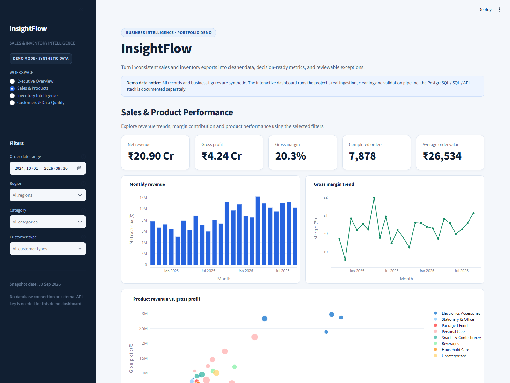
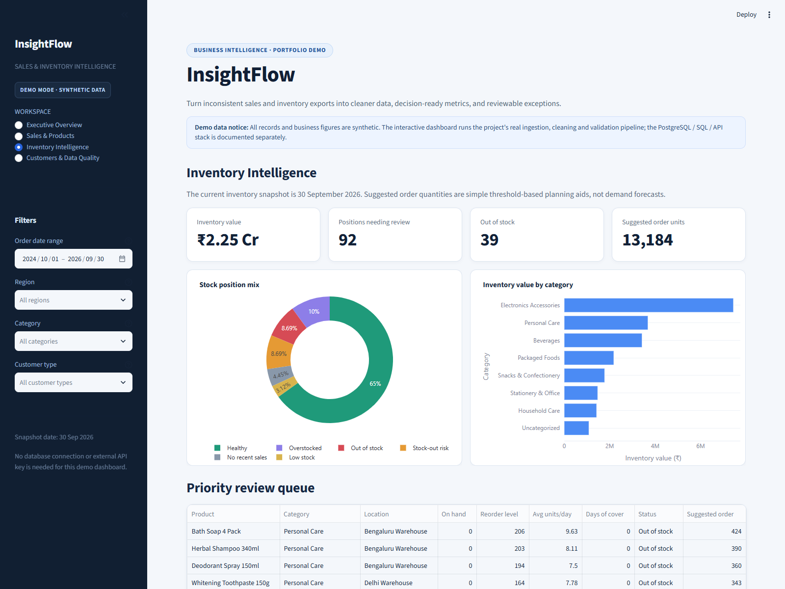
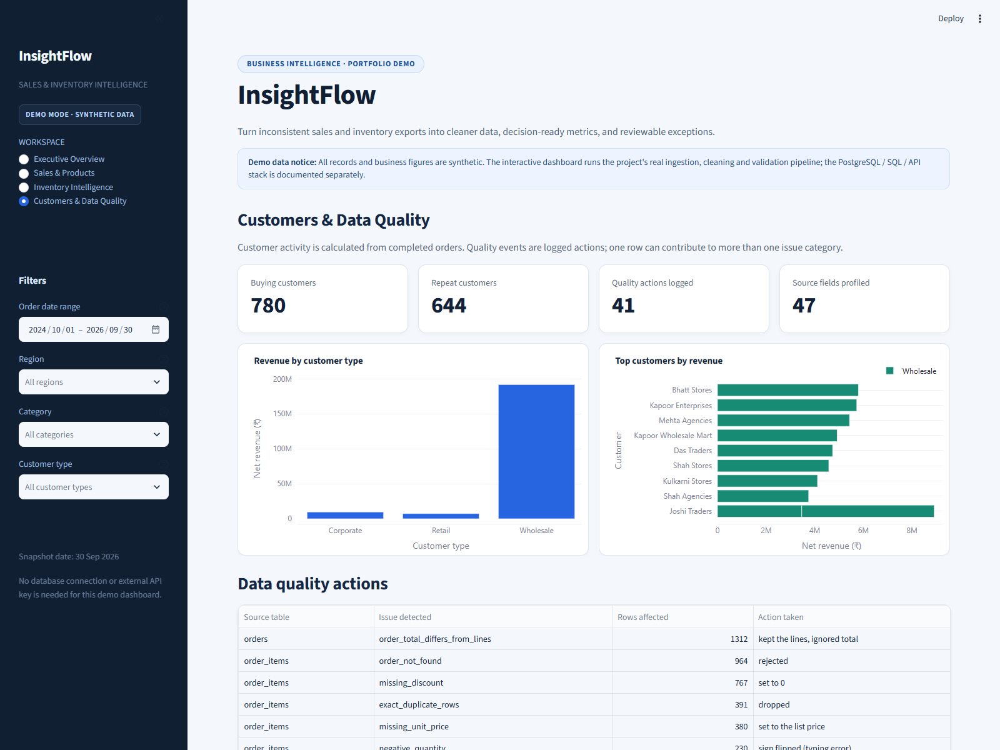
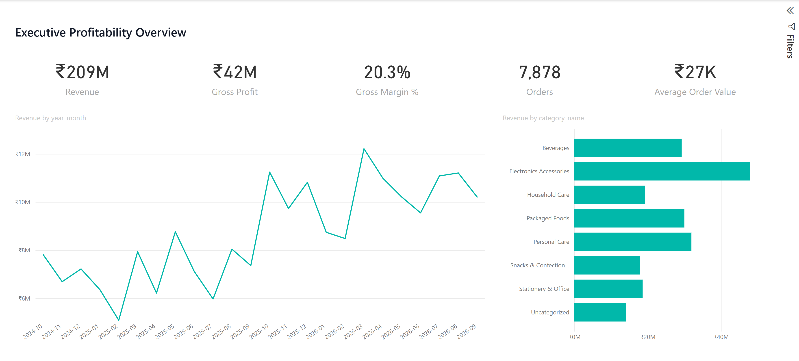
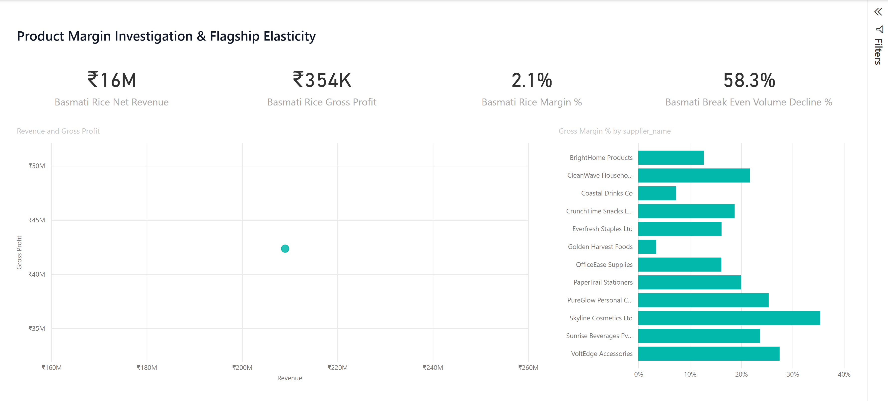
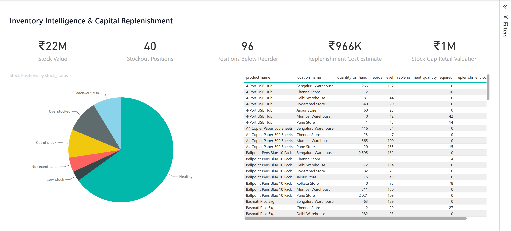
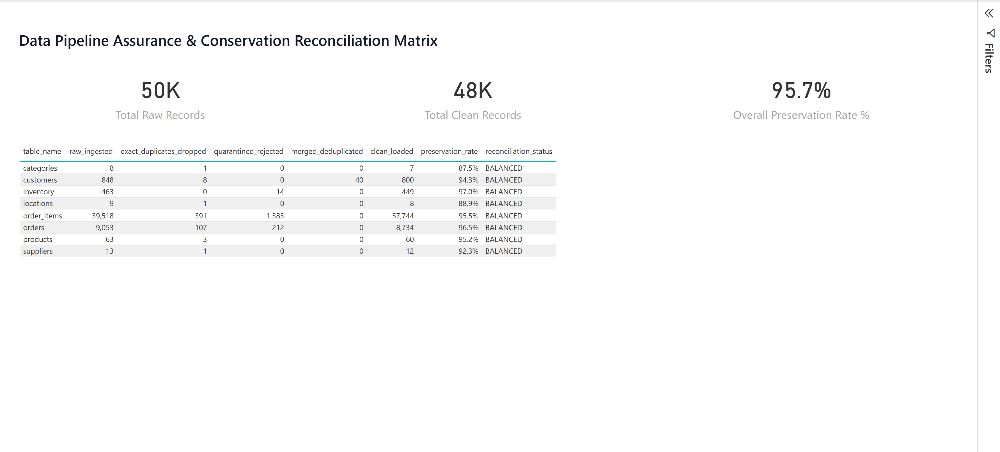

Featured Analytics Case Studies
Analytical solutions engineered end-to-end: multi-channel sales & inventory intelligence, financial tax reconciliation, and operational stock modeling.
Business Problem: Multi-region retail and wholesale operations frequently struggle with disjointed, inconsistent transactional CSV and Excel exports. Missing product categories, sign-flipped quantities, reversed unit costs, and unmerged duplicate customer records obscure gross margin health, hide regional demand shifts, and cause uncoordinated replenishment that traps working capital. InsightFlow automates ingestion profiling, cleans messy operational data, persists normalized star schema models in PostgreSQL, and delivers four decision-ready Streamlit intelligence workspaces.
₹20.90 Cr
Audited Net Revenue (7,878 Orders)
₹4.24 Cr
Gross Profit (20.3% Margin)
60 SKUs
8 Categories across 12 Suppliers
138 Tests
Automated Unit & Pipeline Tests
Executive Overview workspace displaying net revenue, monthly sales trajectory, regional share, and operational inventory signals.
Core Analytical Workspaces (Captured from Live Application)

Sales & Product Performance

Inventory Velocity & Reorder Queue

Customers & Quality Audit Log
Power BI Project (PBIP) Deliverable · 4 Interactive Pages (Desktop Bridge Captures)

PBI: Executive Profitability

PBI: Margin Investigation

PBI: Inventory Decisions

PBI: Data Pipeline Assurance
Semantic Model Architecture · Validated Star Schema (Power BI Desktop Model View)
Model view showing two central fact tables (Sales & Inventory), four single-direction dimensions (Customer, Product, Location, Date), and a type-safe DataQualityReconciliation audit entity.
Pipeline Architecture & Data Quality: Built a 3-step automated data quality pipeline (scripts/run_pipeline.py) that ingests 8 disparate tables, detects missing values and anomalies, and executes deterministic cleaning rules. The pipeline successfully validated 8,734 clean orders (rejecting 212 invalid records with documented rejection reasons), repaired 230 sign-flipped negative quantities, merged 40 duplicate customer profiles, and loaded clean star schema views into PostgreSQL.
Analytical Findings & Business Value: The unfiltered multi-year dataset reveals a 20.3% overall gross margin across ₹20.90 Cr net revenue. Inventory intelligence identifies critical stock imbalances—highlighting SKUs requiring priority reorder versus overstocked items binding liquidity. The RFM customer segmentation engine isolates the top revenue-contributing accounts, enabling targeted account management and churn risk mitigation.
Business Intelligence & Governance Insight:
Replacing unversioned Excel reports with an automated, test-backed pipeline eliminates manual cross-tab errors and guarantees reproducible reporting. Business leaders review clean, single-source-of-truth KPIs while analysts retain full auditability through the automated data quality rejection log.
- Python
- Power BI Desktop
- DAX & Tabular Modeling
- Power BI Project (PBIP)
- PostgreSQL
- SQL Analytics
- FastAPI
- Streamlit
- Pandas ETL
- Data Quality Auditing
- Star Schema Modeling
Execution note: Power BI reports are authored in modern PBIP format and run locally via Microsoft Power BI Desktop on Windows. The hosted Streamlit Community Cloud demo tracks the repository's main branch and serves live interactive analytics on synthetic data without requiring desktop software.
Business Problem: In Indian commercial accounting, manual cross-checking between vendor invoices and accounting purchase ledgers is labor-intensive and prone to missed input tax credit, rounding errors, and wrong tax head classification. This project automates calculation verification across intra-state (CGST + SGST) and inter-state (IGST) invoices, flagging discrepancies before statutory ledger posting.
₹215,500
Batch Taxable Turnover (10 Invoices)
8 / 10
Invoices Fully Reconciled
₹40,020
Expected Total GST (Simplified Rules)
₹4,320
Flagged Tax (INV-1005 & INV-1009)
Batch reconciliation summary showing multi-state tax allocations, ₹0.50 rounding tolerance checks, and prioritized exception triage.
Reconciliation Results: Volume & Expected Tax Breakdown
Decoupled distribution of verified invoices vs. flagged exceptions across ₹40,020 expected tax and ₹215,500 taxable turnover.
Turnover by Geography (₹215,500 Total):
Maharashtra 68.0% (₹146.5K)
Other States 32.0% (₹69K)
-
Reconciled Expected Tax (₹35,700 · 8 invoices)
-
Flagged Expected Tax (₹4,320 · 2 invoices: INV-1005 & INV-1009)
-
Maharashtra (5 invoices · CGST + SGST)
-
Other States (5 invoices · IGST)
Method & Implementation: The Python engine applies vectorized Pandas logic to compute statutory tax splits based on buyer state relative to the supplier's home jurisdiction (Maharashtra). Records are categorized into Intra-State (equal 50/50 split between CGST and SGST) or Inter-State (100% IGST routing). Line-item rounding differences within a ₹0.50 threshold are evaluated automatically.
Analytical Findings: In this 10-invoice batch, 8 invoices (₹185,500 turnover) reconcile with 0 discrepancy. Two records fail verification: INV-1005 underreports total tax by ₹100; INV-1009 totals ₹20,160 correctly but wrongly classifies ₹2,160 under intra-state CGST+SGST rather than IGST, which would lead to incorrect portal credit allocation if not caught.
Operational Scope & Recommendation:
Automated reconciliation flags potential tax head mismatches and math discrepancies prior to monthly return filing. The Python engine assists human review under simplified rules and does not replace professional statutory audit or guarantee statutory input-tax-credit eligibility.
- Python
- Pandas
- Tax Reconciliation
- Excel Automation
- Streamlit
Data source: Demonstration batch of 10 sample invoices processed with simplified state-level tax rules.
Business Problem: Without structured threshold detection and relational data modeling, small distribution businesses face frequent stockouts and unmonitored replenishment cycles. This project implements a normalized relational database in SQLite with automated threshold-breach flags and purchase order tracking.
6 SKUs
Active Seeded Catalog
3 / 6
SKUs Below Reorder Level
35 units
Seeded Open POs (PO #1 & #2)
SQLite 3NF
Relational Data Integrity
Operational stock intelligence evaluating replenishment coverage, active purchase orders, and physical-count reconciliation variances.
Inventory Stock vs. Reorder Level (Seeded Catalog)
Stock on hand (horizontal bar) measured against reorder threshold pins. 3 items trigger automated replenishment flags.
SKU-001
A4 Copier Paper (Ream)
+25 Surplus
SKU-002
USB-C Cable 1m
-7 Deficit (PO #1: 25)
SKU-003
Wireless Mouse
+20 Surplus
SKU-004
Diamond Polishing Cloth
-5 Deficit
SKU-005
Invoice Book (100 pages)
+35 Surplus
SKU-006
External HDD 1TB
-2 Deficit (PO #2: 10)
-
Stock on Hand (Above Reorder Level)
-
Stock on Hand (Below Reorder Level)
-
Vertical Pin = Reorder Level Threshold
Method & Implementation: Built a relational SQLite database schema with normalized tables for Products, Inventory Ledgers, and Purchase Orders. The application calculates replenishment triggers in real time by evaluating current stock quantities against configurable reorder level thresholds, rendering a responsive Streamlit operations dashboard.
Analytical Observations: Three of the six seeded SKUs have breached their replenishment threshold. Open purchase orders are already recorded for SKU-002 (USB-C Cable, 25 units) and SKU-006 (External HDD, 10 units), while SKU-004 (Diamond Polishing Cloth, 5 in stock vs. 10 threshold) has no pending PO on record, representing an unaddressed stockout risk.
Operational Scope & Recommendation:
Automated threshold detection prevents inventory stockouts without holding excessive buffer stock. For immediate operational action, create a purchase order for SKU-004 before trade supply stock reaches zero.
- Python
- SQLite
- Streamlit
- Relational Modeling
- Threshold Analytics
Data source: Illustrative inventory records are seeded from the project's demonstration dataset; stock levels are not live inventory.